Lesespur: Das Aquarium – Lesespurgeschichte mit Rätseln (Klasse 4)
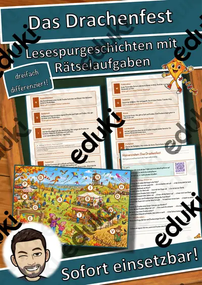
Lesespur: Das Drachenfest – Lesespurgeschichte mit Rätseln (Klasse 3)

Lesespur: Das Eis am Dach – Lesespurgeschichte mit Rätseln (Klasse 3)

Lesespur: Das Fahrrad – Lesespurgeschichte mit Rätseln (Klasse 4)

Lesespur: Das Iglu – Lesespurgeschichte mit Rätseln (Klasse 3)

Lesespur: Das Krankenhaus – Lesespurgeschichte mit Rätseln (Klasse 2)

Lesespur: Das Laternenfest – Lesespurgeschichte mit Rätseln (Klasse 3)

Lesespur: Das Schneelabor – Lesespurgeschichte mit Rätseln (Klasse 3)

Lesespur: Das Schwimmbad – Lesespurgeschichte mit Rätseln (Klasse 3)
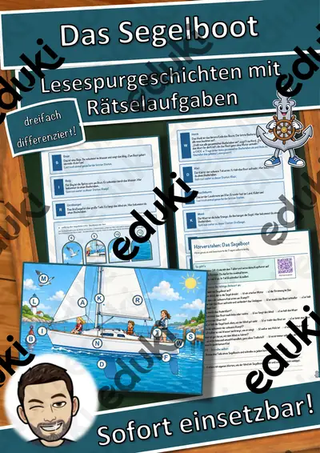
Lesespur: Das Segelboot – Lesespurgeschichte mit Rätseln (Klasse 4)
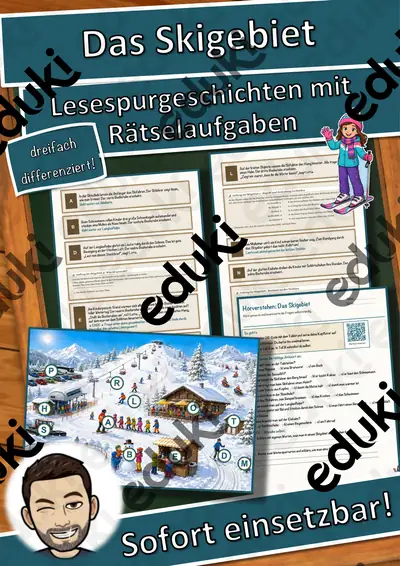
Lesespur: Das Skigebiet – Lesespurgeschichte mit Rätseln (Klasse 2)
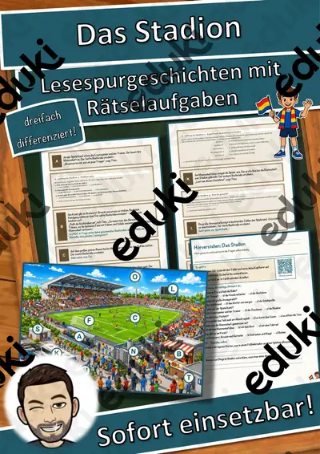
Lesespur: Das Stadion – Lesespurgeschichte mit Rätseln (Klasse 2)

Lesespur: Das Sägewerk – Lesespurgeschichte mit Rätseln (Klasse 4)
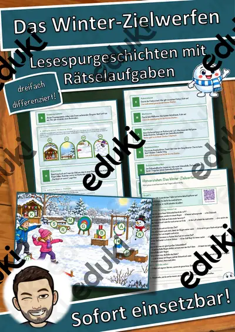
Lesespur: Das Winter-Zielwerfen – Lesespurgeschichte mit Rätseln (Klasse 3)

Lesespur: Das Winterquartier – Lesespurgeschichte mit Rätseln (Klasse 3)

Lesespur: Das süße Wintergemüse – Lesespurgeschichte mit Rätseln (Klasse 3)

Lesespur: Der Ahornweg – Lesespurgeschichte mit Rätseln (Klasse 3)

Lesespur: Der Apfelkeller – Lesespurgeschichte mit Rätseln (Klasse 3)

Lesespur: Der Campingplatz – Lesespurgeschichte mit Rätseln (Klasse 4)

Lesespur: Der Christbaumhof – Lesespurgeschichte mit Rätseln (Klasse 3)

Lesespur: Der Eisbrecher – Lesespurgeschichte mit Rätseln (Klasse 3)

Lesespur: Der Eisstock – Lesespurgeschichte mit Rätseln (Klasse 3)

Lesespur: Der Herbstwald – Lesespurgeschichte mit Rätseln (Klasse 3)
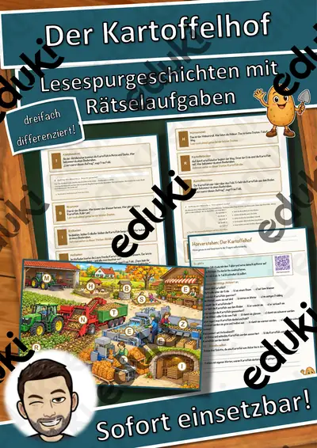
Lesespur: Der Kartoffelhof – Lesespurgeschichte mit Rätseln (Klasse 3)

Lesespur: Der Kürbis – Lesespurgeschichte mit Rätseln (Klasse 3)

Lesespur: Der Kürbishof – Lesespurgeschichte mit Rätseln (Klasse 3)

Lesespur: Der Marienkäfer – Lesespurgeschichte mit Rätseln (Klasse 4)

Lesespur: Der Nordpol – Lesespurgeschichte mit Rätseln (Klasse 4)
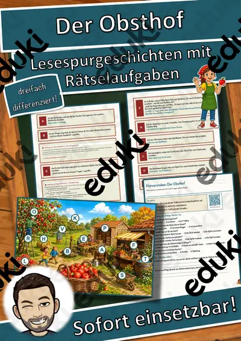
Lesespur: Der Obsthof – Lesespurgeschichte mit Rätseln (Klasse 4)
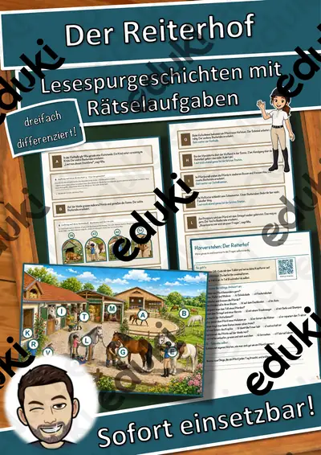
Lesespur: Der Reiterhof – Lesespurgeschichte mit Rätseln (Klasse 3)

Lesespur: Der Schmetterling – Lesespurgeschichte mit Rätseln (Klasse 4)

Lesespur: Der Schulbus – Lesespurgeschichte mit Rätseln (Klasse 3)

Lesespur: Der Schulgarten – Lesespurgeschichte mit Rätseln (Klasse 3)
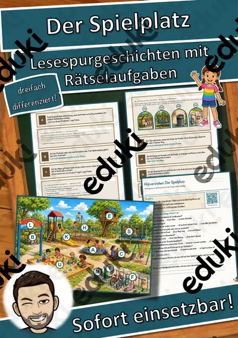
Lesespur: Der Spielplatz – Lesespurgeschichte mit Rätseln (Klasse 2)

Lesespur: Der Strand: Ein Tag am Meer – Lesespurgeschichte mit Rätseln (Klasse 5)

Lesespur: Der Waldboden – Lesespurgeschichte mit Rätseln (Klasse 3)
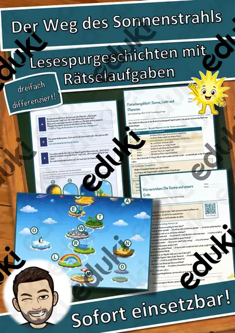
Lesespur: Der Weg des Sonnenstrahls (Sonne und Erde) – Lesespurgeschichte mit Rätseln (Klasse 5)
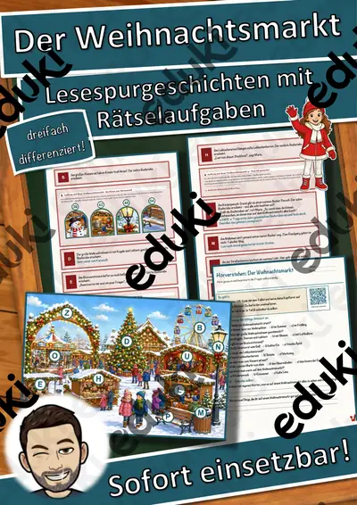
Lesespur: Der Weihnachtsmarkt – Lesespurgeschichte mit Rätseln (Klasse 4)

Lesespur: Der Wertstoffhof – Lesespurgeschichte mit Rätseln (Klasse 3)
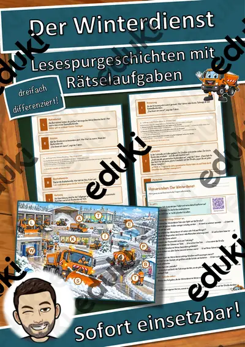
Lesespur: Der Winterdienst – Lesespurgeschichte mit Rätseln (Klasse 3)

Lesespur: Der Wintersee – Lesespurgeschichte mit Rätseln (Klasse 3)

Lesespur: Der Zirkus: Ein Tag in der Manege – Lesespurgeschichte mit Rätseln (Klasse 5)
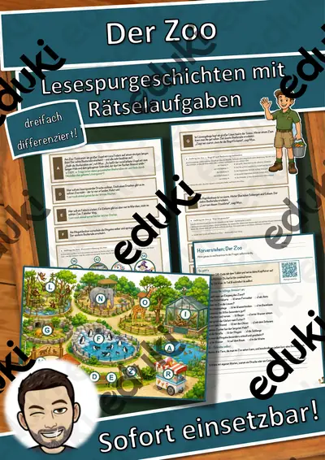
Lesespur: Der Zoo: Ein Tag bei den Tieren – Lesespurgeschichte mit Rätseln (Klasse 5)

Lesespur: Der Zwiebelgarten – Lesespurgeschichte mit Rätseln (Klasse 3)

Lesespur: Der dunkle Schulweg – Lesespurgeschichte mit Rätseln (Klasse 3)

Lesespur: Der frostige Wintermorgen – Lesespurgeschichte mit Rätseln (Klasse 3)
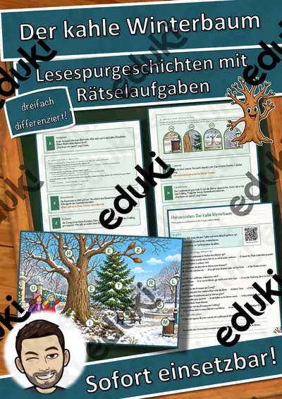
Lesespur: Der kahle Winterbaum – Lesespurgeschichte mit Rätseln (Klasse 3)

Lesespur: Der leise Winterwald – Lesespurgeschichte mit Rätseln (Klasse 3)

Lesespur: Der sichtbare Atem – Lesespurgeschichte mit Rätseln (Klasse 3)
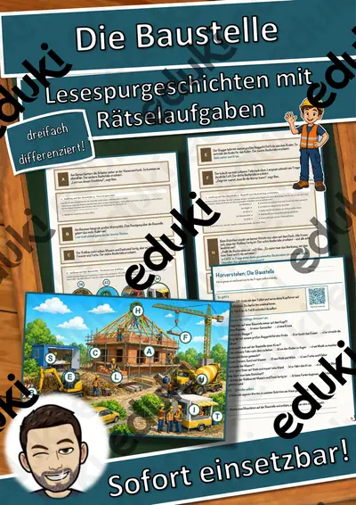
Lesespur: Die Baustelle – Lesespurgeschichte mit Rätseln (Klasse 3)
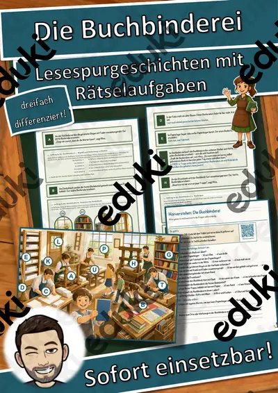
Lesespur: Die Buchbinderei – Lesespurgeschichte mit Rätseln (Klasse 4)
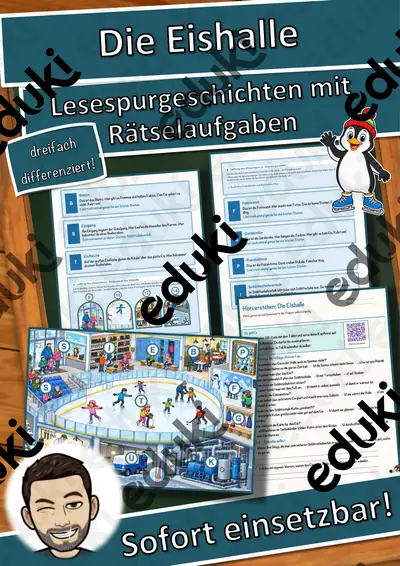
Lesespur: Die Eishalle – Lesespurgeschichte mit Rätseln (Klasse 4)

Lesespur: Die Feuerwache – Lesespurgeschichte mit Rätseln (Klasse 3)

Lesespur: Die Fischerei – Lesespurgeschichte mit Rätseln (Klasse 4)
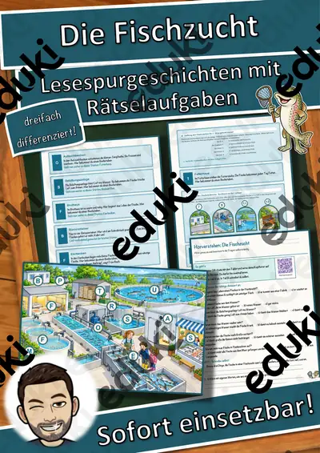
Lesespur: Die Fischzucht – Lesespurgeschichte mit Rätseln (Klasse 4)

Lesespur: Die Glasbläserei – Lesespurgeschichte mit Rätseln (Klasse 4)

Lesespur: Die Huskyfarm – Lesespurgeschichte mit Rätseln (Klasse 3)
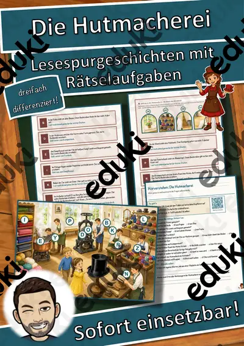
Lesespur: Die Hutmacherei – Lesespurgeschichte mit Rätseln (Klasse 4)

Lesespur: Die Igel-Auffangstation – Lesespurgeschichte mit Rätseln (Klasse 3)

Lesespur: Die Imkerei – Lesespurgeschichte mit Rätseln (Klasse 4)
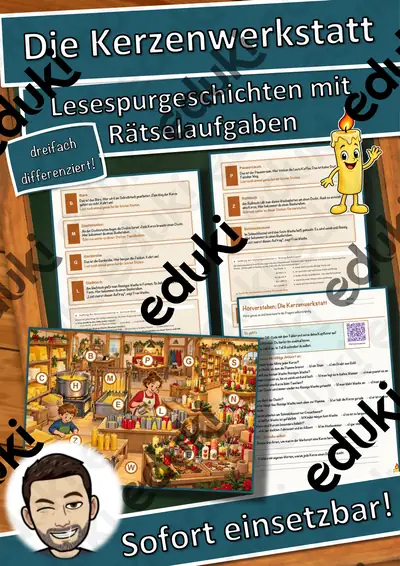
Lesespur: Die Kerzenwerkstatt – Lesespurgeschichte mit Rätseln (Klasse 3)
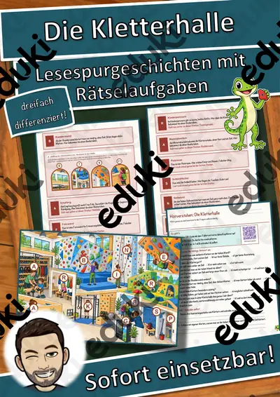
Lesespur: Die Kletterhalle – Lesespurgeschichte mit Rätseln (Klasse 4)

Lesespur: Die Korbflechterei – Lesespurgeschichte mit Rätseln (Klasse 4)

Lesespur: Die Lebkuchenbäckerei – Lesespurgeschichte mit Rätseln (Klasse 3)

Lesespur: Die Mosterei – Lesespurgeschichte mit Rätseln (Klasse 4)

Lesespur: Die Mühle – Lesespurgeschichte mit Rätseln (Klasse 4)

Lesespur: Die Nachtwanderung – Lesespurgeschichte mit Rätseln (Klasse 4)

Lesespur: Die Nebelwiese – Lesespurgeschichte mit Rätseln (Klasse 3)

Lesespur: Die Polarstation – Lesespurgeschichte mit Rätseln (Klasse 3)

Lesespur: Die Radfahrprüfung: Vorfahrt, Verkehrszeichen, sicheres Abbiegen – Lesespurgeschichte mit Rätseln (Klasse 4)

Lesespur: Die Rodelbahn – Lesespurgeschichte mit Rätseln (Klasse 3)
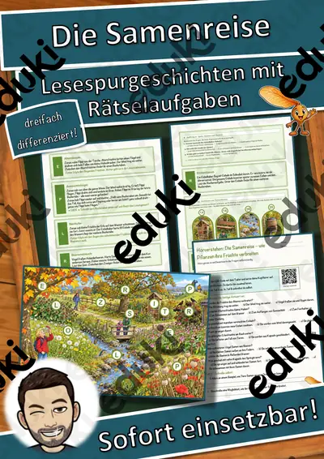
Lesespur: Die Samenreise: wie Pflanzen ihre Früchte verbreiten – Lesespurgeschichte mit Rätseln (Klasse 4)

Lesespur: Die Schmiede – Lesespurgeschichte mit Rätseln (Klasse 4)
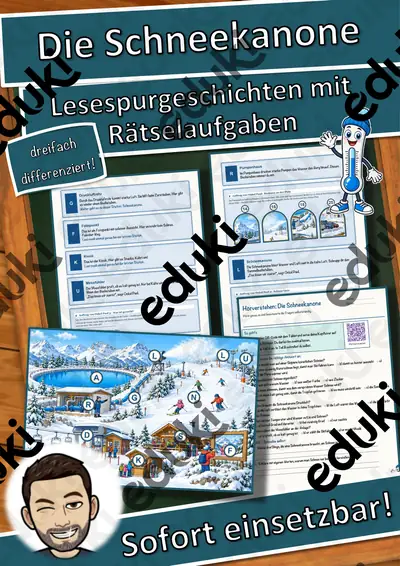
Lesespur: Die Schneekanone – Lesespurgeschichte mit Rätseln (Klasse 3)
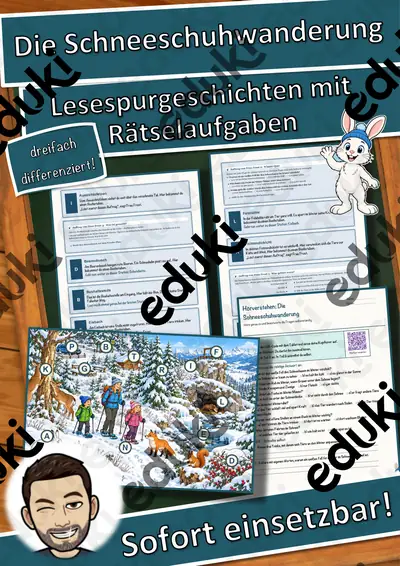
Lesespur: Die Schneeschuhwanderung – Lesespurgeschichte mit Rätseln (Klasse 3)

Lesespur: Die Schneespur – Lesespurgeschichte mit Rätseln (Klasse 3)

Lesespur: Die Seenotrettungsstation – Lesespurgeschichte mit Rätseln (Klasse 4)

Lesespur: Die Seilerei – Lesespurgeschichte mit Rätseln (Klasse 4)

Lesespur: Die Spielzeugwerkstatt – Lesespurgeschichte mit Rätseln (Klasse 4)

Lesespur: Die Sprungschanze – Lesespurgeschichte mit Rätseln (Klasse 3)
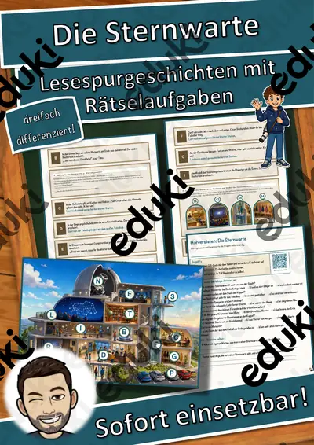
Lesespur: Die Sternwarte – Lesespurgeschichte mit Rätseln (Klasse 4)

Lesespur: Die Streuobstwiese – Lesespurgeschichte mit Rätseln (Klasse 3)
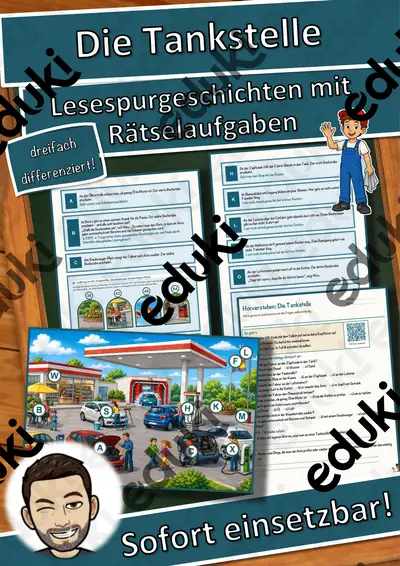
Lesespur: Die Tankstelle – Lesespurgeschichte mit Rätseln (Klasse 4)
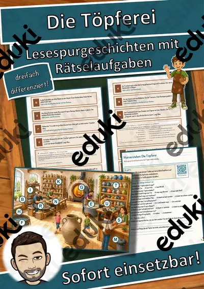
Lesespur: Die Töpferei – Lesespurgeschichte mit Rätseln (Klasse 4)

Lesespur: Die Uhrmacherei – Lesespurgeschichte mit Rätseln (Klasse 4)

Lesespur: Die Vogelbeobachtung – Lesespurgeschichte mit Rätseln (Klasse 4)

Lesespur: Die Vogelhochzeit: ein sorbischer Brauch im Januar – Lesespurgeschichte mit Rätseln (Klasse 3)

Lesespur: Die Vogelscheuche – Lesespurgeschichte mit Rätseln (Klasse 3)

Lesespur: Die Vogelzählung – Lesespurgeschichte mit Rätseln (Klasse 3)

Lesespur: Die Weberei – Lesespurgeschichte mit Rätseln (Klasse 4)

Lesespur: Die Weihnachtsstube – Lesespurgeschichte mit Rätseln (Klasse 3)
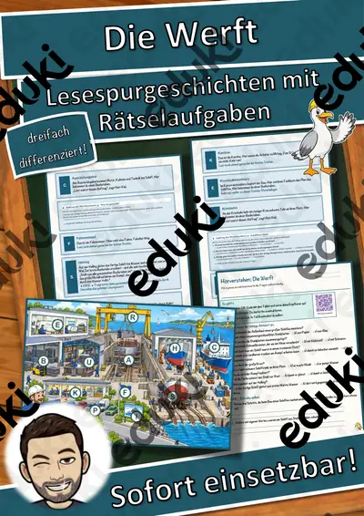
Lesespur: Die Werft – Lesespurgeschichte mit Rätseln (Klasse 4)
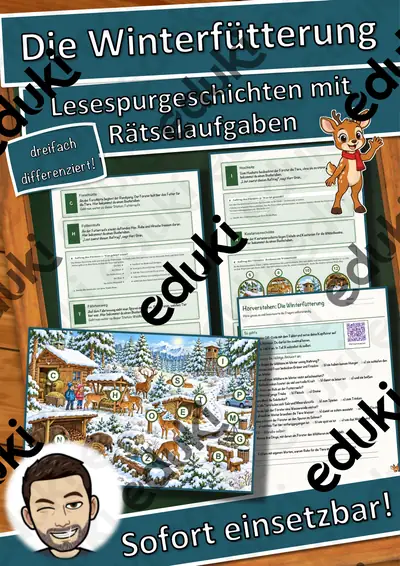
Lesespur: Die Winterfütterung – Lesespurgeschichte mit Rätseln (Klasse 3)
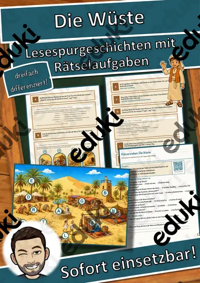
Lesespur: Die Wüste – Lesespurgeschichte mit Rätseln (Klasse 4)

Lesespur: Die Zaubershow: Hinter den Kulissen der Magie – Lesespurgeschichte mit Rätseln (Klasse 5)
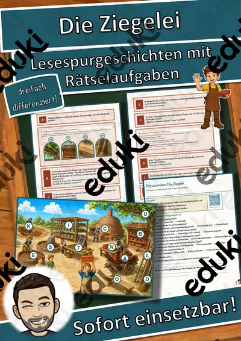
Lesespur: Die Ziegelei – Lesespurgeschichte mit Rätseln (Klasse 4)

Lesespur: Die grüne Kugel im Winterbaum – Lesespurgeschichte mit Rätseln (Klasse 3)

Lesespur: Ein Schlitten nach eigenem Plan: zeichnen, bauen, testen – Lesespurgeschichte mit Rätseln (Klasse 3)

Lesespur: Fasching, Fastnacht und Karneval: Bräuche in der närrischen Zeit – Lesespurgeschichte mit Rätseln (Klasse 4)

Lesespur: Fit durch den Winter – Lesespurgeschichte mit Rätseln (Klasse 3)
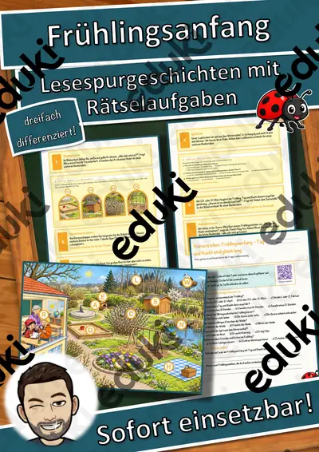
Lesespur: Frühlingsanfang: Tag und Nacht sind gleich lang – Lesespurgeschichte mit Rätseln (Klasse 3)

Lesespur: Mission Energiesparen – Lesespurgeschichte mit Rätseln (Klasse 5)

Lesespur: Reise durch das Sonnensystem – Lesespurgeschichte mit Rätseln (Klasse 6)

Lesespur: Sicher unterwegs im Verkehr – Lesespurgeschichte mit Rätseln (Klasse 5)
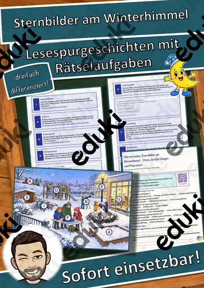
Lesespur: Sternbilder am Winterhimmel: Orion, Großer Wagen und Polarstern – Lesespurgeschichte mit Rätseln (Klasse 4)
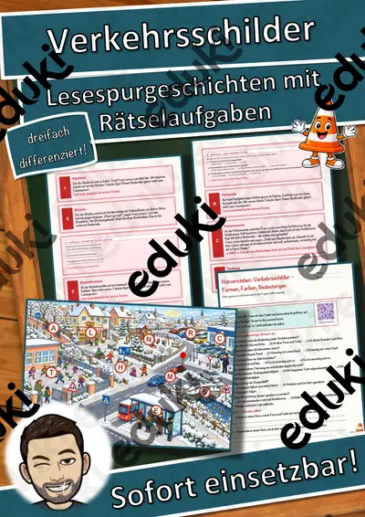
Lesespur: Verkehrsschilder: Formen, Farben, Bedeutungen – Lesespurgeschichte mit Rätseln (Klasse 4)

Lesespur: Warum die Tanne grün bleibt – Lesespurgeschichte mit Rätseln (Klasse 3)

Lesespur: Warum frieren die Tiere nicht? – Lesespurgeschichte mit Rätseln (Klasse 3)

Lesespur: Weiß wie der Schnee – Lesespurgeschichte mit Rätseln (Klasse 3)

Lesespur: Wenn die Blätter bunt werden – Lesespurgeschichte mit Rätseln (Klasse 3)

Lesespur: Wenn die Spinnen fliegen – Lesespurgeschichte mit Rätseln (Klasse 3)
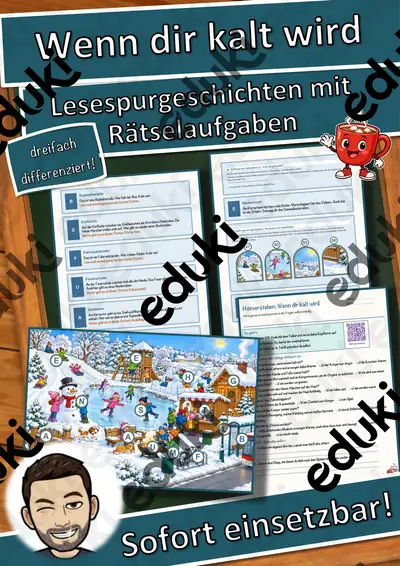
Lesespur: Wenn dir kalt wird – Lesespurgeschichte mit Rätseln (Klasse 3)
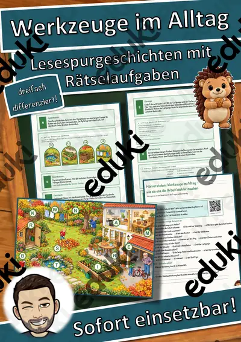
Lesespur: Werkzeuge im Alltag: wie sie uns die Arbeit leichter machen – Lesespurgeschichte mit Rätseln (Klasse 1)

Materialpaket Lesespurgeschichten Sachunterricht Klasse 2: 4 Lesespuren mit Rätselaufgaben, dreifach differenziert
Materialpaket Lesespurgeschichten Sachunterricht Klasse 3 – Alltag, Jahreslauf und Technik: 16 Lesespuren mit Rätselaufgaben, dreifach differenziert

Materialpaket Lesespurgeschichten Sachunterricht Klasse 3 – Tiere, Pflanzen und Natur: 15 Lesespuren mit Rätselaufgaben, dreifach differenziert
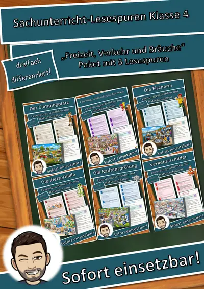
Materialpaket Lesespurgeschichten Sachunterricht Klasse 4 – Freizeit, Verkehr und Bräuche: 6 Lesespuren mit Rätselaufgaben, dreifach differenziert
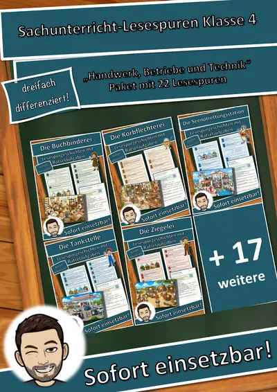
Materialpaket Lesespurgeschichten Sachunterricht Klasse 4 – Handwerk, Betriebe und Technik: 22 Lesespuren mit Rätselaufgaben, dreifach differenziert
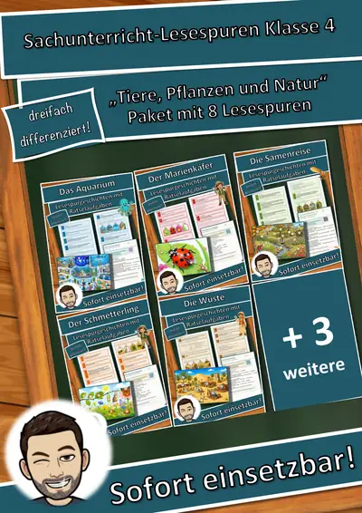
Materialpaket Lesespurgeschichten Sachunterricht Klasse 4 – Tiere, Pflanzen und Natur: 8 Lesespuren mit Rätselaufgaben, dreifach differenziert

Materialpaket Lesespurgeschichten Sachunterricht Klasse 5: 7 Lesespuren mit Rätselaufgaben, dreifach differenziert

Materialpaket Natur im Winter für die 3. Klasse: 10 Lesespurgeschichten mit Rätselaufgaben (Wintertiere, Winterwald, Schneespuren & mehr)

Materialpaket Schnee, Eis und Wintersport für die 3. Klasse: 10 Lesespurgeschichten mit Rätselaufgaben (Rodelbahn, Eisstock, Schneelabor & mehr)

Materialpaket Winter und Advent für die 4. Klasse: 5 Lesespurgeschichten mit Rätselaufgaben (Weihnachtsmarkt, Fröbelsterne, Sternbilder & mehr)
Lesespurgeschichten im Fach Sachunterricht
Für die Grundschule ist die Lesespur ein Einstieg in selbstständiges Arbeiten. Der Lageplan gibt Halt, die Texte sind kurz, und die gesammelten Buchstaben zeigen am Ende, ob der Weg gestimmt hat.
Jede Geschichte liegt in drei Niveaustufen vor, die sich in Textlänge, Satzbau und Aufgabenanspruch unterscheiden. Weg, Stationen und Lösungswort bleiben gleich, sodass alle Fassungen gleichzeitig in einer Klasse laufen können.
Themen auf dieser Seite
Beispiele aus dieser Sammlung: Lesespur: Der Ahornweg · Lesespur: Der Obsthof · Lesespur: Die Mosterei · Lesespur: Die Schmiede · Lesespur: Die Weberei · Lesespur: Die Wüste · Lesespur: Der Weihnachtsmarkt · Lesespur: Die Streuobstwiese.